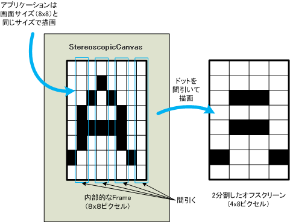
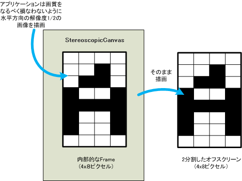

com.docomostar.ui.Frame
com.docomostar.ui.Canvas
com.docomostar.opt.ui.stereoscope.StereoscopicCanvas
com.docomostar.ui.Frame
com.docomostar.ui.Canvas
com.docomostar.opt.ui.stereoscope.StereoscopicCanvas
|
|||||||||
| 前のクラス 次のクラス | フレームあり フレームなし | ||||||||
| 概要: 入れ子 | フィールド | コンストラクタ | メソッド | 詳細: フィールド | コンストラクタ | メソッド | ||||||||
Object
public abstract class StereoscopicCanvas
ステレオ表示用キャンバスを定義します。
ステレオ表示機能の概要については、com.docomostar.opt.ui.stereoscope を参照してください。
ステレオ表示用キャンバスがカレントの場合、常にステレオ表示状態が ON となり、
右目用と左目用の画像の視差による立体表示が行われます。
ステレオ表示設定が有効である Stereoscopicable を実装した Canvas と
ステレオ表示用キャンバスがカレントでなくなると、ステレオ表示状態は OFF になります。
ADF の DrawArea の横x縦サイズから決定する「横ワイド」「縦ワイド」アプリでは、 それぞれ、横画面、縦画面でステレオ表示が行われます。 ただし、以下の場合はコンストラクタの呼び出しで例外が発生します。
StereoscopicCanvas(true) により、 元画像の水平方向に対してピクセルの間引を行うことで自動的に画像解像度を変換する StereoscopicCanvas インスタンスを生成することができます。
水平方向の間引きを自動的に行う場合と行わない場合の違いについて以下で説明します。
アプリケーションプログラマは、ADF の DrawArea の 描画領域と同じサイズ (ADF の DrawArea が設定されていない場合はデフォルト描画サイズ) の画面バッファに対して描画します。 その画像に対して自動的に水平方向を間引き、画像解像度を変更した結果をオフスクリーンに描画します。
右目用及び左目用の画像の描画幅は、それぞれ ADF の DrawArea の横幅になるため、
Frame.getWidth() は DrawArea の横幅を返します。
既存のアプリケーションをステレオ表示用に変更する場合など、 この機能を使用することで画像変換を行う必要がなくなります。 ただし、予期しない画素の欠落により画質が劣化したり、 描画速度が低下する可能性があります。

アプリケーションプログラマは、ADF の DrawArea の 描画領域と同じサイズ (ADF の DrawArea が設定されていない場合はデフォルト描画サイズ)の水平方向に、 解像度比を除算したサイズの画面バッファに対して描画します。 画面バッファの画像に変更を加えずオフスクリーンに描画します。
左目用および右目用の画像の描画幅は、それぞれ DrawArea
を解像度比で除算した値となるため、
Frame.getWidth() は DrawArea の横幅を解像度比で除算した値を返します。
アプリケーションが用意した画像をそのまま表示するため、 予期しない画素の欠落による画質の劣化はありません。 ただし、既存のアプリケーションをステレオ表示用に変更する場合などは、 画像変換を行う必要があります。

このステレオ表示用キャンバスがカレントの状態で、 以下のいずれかの条件が発生した時、ステレオ表示状態が OFF になります。
Dialog.show() の呼び出し
上記条件でステレオ表示状態が OFF になった場合、以下で再度 ステレオ表示状態が ON になります。
Dialog.show() の復帰
StereoscopicCanvas.repaint(int, int, int, int) は、
左目用および右目用の画像に対して、指定した矩形領域を再描画します。
指定した矩形領域は StereoscopicGraphics.setDepth(int) で設定する奥行きの影響を受けません。
なお、StereoscopicCanvas(true) の場合、
間引く前の座標に再描画します。
| フィールドの概要 |
|---|
| クラス com.docomostar.ui.Canvas から継承されたフィールド |
|---|
ALPHA, DISPLAY_ANY, DISPLAY_PASSWORD, HANGUL, IME_CANCELED, IME_COMMITTED, KANA, NUMBER, PORTUGUESE, SIMPLIFIED_HANZI, TRADITIONAL_HANZI |
| クラス com.docomostar.ui.Frame から継承されたフィールド |
|---|
ARROW_DOWN, ARROW_LEFT, ARROW_RIGHT, ARROW_UP, SELECT_KEY, SOFT_KEY_1, SOFT_KEY_2, SOFT_KEY_3, SOFT_KEY_4 |
| コンストラクタの概要 | |
|---|---|
StereoscopicCanvas()
ステレオ表示用キャンバスオブジェクトを生成します。 |
|
StereoscopicCanvas(boolean isPixelSkip)
水平方向の間引きを行うかどうかを指定して、ステレオ表示用キャンバスオブジェクトを生成します。 |
|
| メソッドの概要 |
|---|
| クラス com.docomostar.ui.Canvas から継承されたメソッド |
|---|
getGraphics, getKeypadState, getKeypadState, imeOn, imeOn, init, onTouchEvent, paint, processEvent, processIMEEvent, repaint, repaint |
| クラス com.docomostar.ui.Frame から継承されたメソッド |
|---|
getHeight, getWidth, setBackground, setSoftArrowLabel, setSoftLabel, setSoftLabelVisible |
| クラス Object から継承されたメソッド |
|---|
equals, getClass, hashCode, notify, notifyAll, toString, wait, wait, wait |
| コンストラクタの詳細 |
|---|
public StereoscopicCanvas()
ステレオ表示用キャンバスオブジェクトを生成します。
生成されるステレオ表示用キャンバスオブジェクトは、 StereoscopicCanvas(false) で生成されたオブジェクトと同様になります。
StereoscopicCanvas(boolean)
com.docomostar.lang.UnsupportedOperationException -
com.docomostar.ui.UIException - public StereoscopicCanvas(boolean isPixelSkip)
水平方向の間引きを行うかどうかを指定して、ステレオ表示用キャンバスオブジェクトを生成します。
引数 isPixelSkip に「水平方向の間引きを行うかどうか」を指定します。
true を指定した場合、
StereoscopicCanvas.init(Graphics)、
StereoscopicCanvas.paint(Graphics)、
StereoscopicCanvas.getGraphics()
および StereoscopicGraphics.getRawGraphics(int) で渡される
Graphics オブジェクトで描画を行うと常に水平方向の間引きが行われます。
false を指定した場合は、常にGraphics オブジェクトでの描画がそのまま反映されます。
isPixelSkip - 水平方向の間引きを行う場合は true を、行なわない場合は false を指定します。StereoscopicCanvas()
com.docomostar.lang.UnsupportedOperationException -
com.docomostar.ui.UIException -
|
|||||||||
| 前のクラス 次のクラス | フレームあり フレームなし | ||||||||
| 概要: 入れ子 | フィールド | コンストラクタ | メソッド | 詳細: フィールド | コンストラクタ | メソッド | ||||||||
NTT DOCOMO,INC.
本製品または文書は著作権法により保護されており、その使用、複製、再頒布および逆コンパイルを制限するライセンスのもとにおいて頒布されます。NTTドコモ（その他に許諾者がある場合は当該許諾者も含めて）の書面による事前の許可なく、本製品および関連する文書のいかなる部分も、いかなる方法によっても複製することが禁じられます。フォントを含む第三者のソフトウェアは、著作権法により保護されており、その提供者からライセンスを受けているものです。
Sun、Sun Microsystems、Java、J2MEおよびJ2SEは、米国およびその他の国における米国 Sun Microsystems,Inc.の商標または登録商標です。サンのロゴマークは、米国 Sun Microsystems, Inc.の登録商標です。
FeliCaは、ソニー株式会社が開発した非接触ICカードの技術方式です。FeliCaは、ソニー株式会社の登録商標です。
「ｉモード」、「ｉアプリ／アイアプリ」、「ｉ-αppli」ロゴ、「DoJa」はNTTドコモの商標または登録商標です。
その他記載された会社名、製品名などは該当する各社の商標または登録商標です。